Screen Analysis — Overview
The first of twelve screen analyses. Each follows the same structure: purpose, rationale, information provided, mechanism, interpretation, and a practical use case. Every major section within the screen is documented individually.

5.1 Purpose
To answer one question without scrolling and without interaction: is the site healthy right now? This is the screen intended to remain permanently displayed on a wall-mounted monitor.
5.2 Why this screen exists
Continuous monitoring only works if the normal state is legible at a glance from across a room. If an operator must read numbers or navigate to establish that nothing is wrong, the monitoring is not continuous — it is periodic inspection. The Overview compresses six headline electrical parameters, the alarm state, the network diagram and the supply-quality trace into a single view.INTERP
5.3 Sections
5.3.1 KPI strip
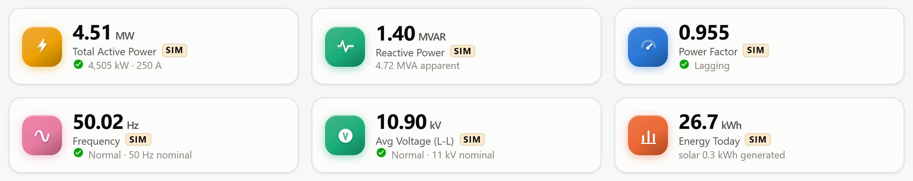
- Purpose
- Present the six parameters that together characterise the electrical state of the site.
- Contents
- Total Active Power (MW) · Reactive Power (MVAR) · Power Factor · Frequency (Hz) · Average Voltage L-L (kV) · Energy Today (kWh/MWh).
- Data used
- All six read from the electrical model, which derives them from the summed real power of all monitored points.IMPL
- Relationship
- These are site-wide aggregates of the same readings broken down on Load Monitoring and analysed on Energy Analytics.
- Interpretation
- Four tiles carry a pass/fail indicator: power factor (green at ≥ 0.90), frequency (green within 49.5–50.5 Hz), voltage (green within 10.5–11.5 kV). If all show green, supply quality is acceptable.
- Significance
- These are the figures an electrical engineer asks for first. Full definitions appear in Chapter 17.
5.3.2 Total load trend
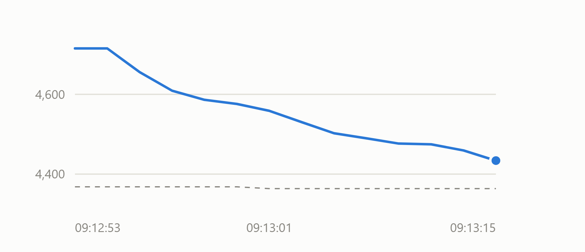
- Purpose
- Show the shape of demand over time and whether the site is above or below its normal profile.
- Data used
- The site history ring buffer, holding up to 240 samples of net demand and expected demand.IMPL
- Unit
- kW on the y-axis; clock time on the x-axis.
- Interpretation
- The solid line tracking near the dashed line means the site is behaving normally for the time of day. A sustained gap above it is the signal worth investigating — a raw value alone cannot tell you that.
- Significance
- Provides the context that turns a number into a judgement.
5.3.3 Active alarms
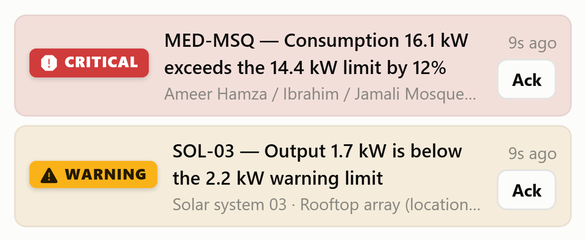
- Purpose
- Surface every condition currently requiring operator attention, worst first.
- Data used
- The alarm engine's open-episode list, sorted by severity, then by acknowledgement state, then by recency.IMPL
- Interpretation
- A Critical tag means consumption exceeded the alarm limit. Warning means the warning limit. Comms means the meter stopped reporting — a communications fault, not an electrical one. When empty it states so explicitly rather than showing nothing.
- Significance
- This panel is the operational core of the screen; everything else is context for it.
5.3.4 Power distribution
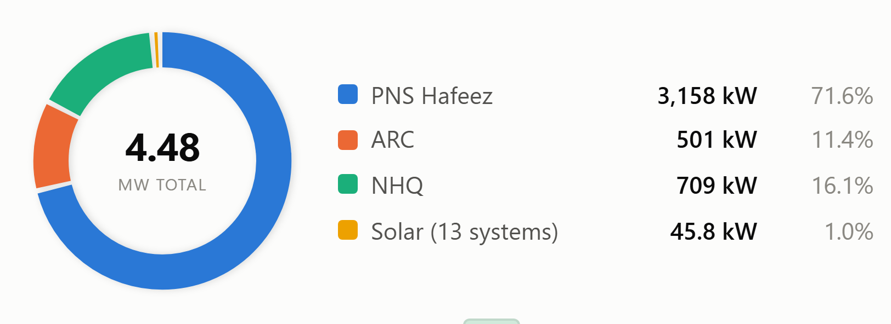
- Purpose
- Show how site demand divides between supply points.
- Data used
- Substation roll-ups from the store; solar from the generation roll-up.IMPL
- Unit
- kW and percentage of total.
- Relationship
- Same underlying figures as the substation boxes on the single-line diagram and the feeder bars on Power Flow.
- Interpretation
- A structural view rather than a diagnostic one. It is expected to be stable; a sudden change in the split means load has transferred or a substation has lost supply.
5.3.5 Load by category
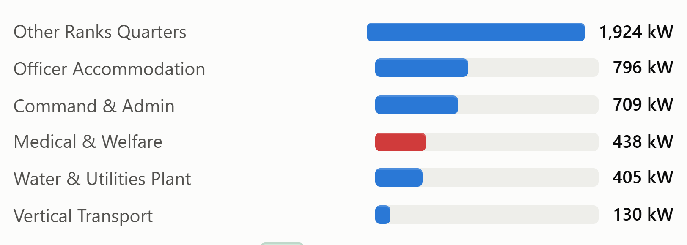
- Purpose
- Show which categories of asset are consuming the most.
- Data used
- Group roll-ups, sorted descending, top six shown.IMPL
- Grouping
- Uses the register's own taxonomy — Officer Accommodation, Other Ranks Quarters, Command & Admin, Medical & Welfare, Water & Utilities, Street & Area Lighting, Vertical Transport, Outstations, Solar Generation — rather than inventing new categories.
- Interpretation
- Residential groups dominate, which is expected for a complex of 2,157 buildings. Rank order changing through the day is normal; a group jumping rank abruptly is not.
5.3.6 Energy consumption gauge
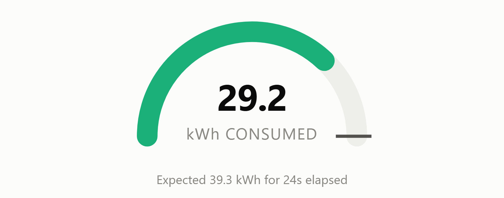
- Purpose
- Compare accumulated energy against a reference for the same elapsed time.
- Calculation
- Reference = site rated demand × elapsed hours × 0.85. The register contains no consumption target, so this reference is derived rather than given.IMPL
- Unit
- kWh below 1,000; MWh above.
- Interpretation
- Fill beyond the tick means consumption is running ahead of expectation for the period. The arc turns amber above 85% and red above 95% of the reference.
5.3.7 Energy summary
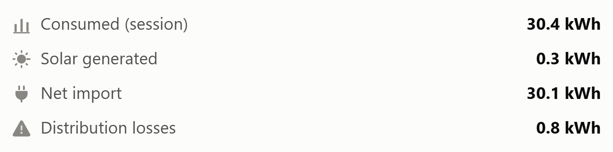
- Purpose
- Give the energy balance in four lines.
- Calculation
- Net import = consumed − solar generated. Losses accumulate at a demand-dependent fraction (Chapter 19).IMPL
- Relationship
- These four figures reappear as the doughnut segments on Energy Analytics.
5.3.8 Electrical single-line diagram
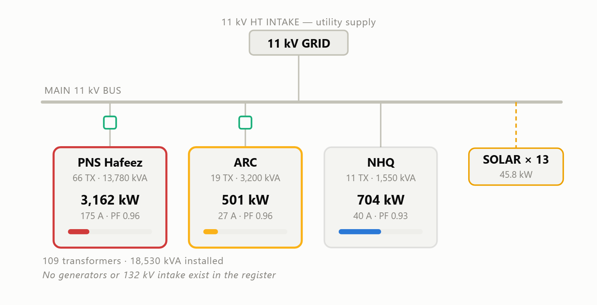
- Purpose
- Present the network in the form an electrical engineer already thinks in, so no mental translation from a generic chart is required.
- Data used
- Topology and transformer counts from the register; live load, current and power factor from the electrical model.IMPL
- Status encoding
- A substation box outlines amber or red when any point it feeds holds an alarm — linking the diagram directly to the alarm list.
- Interpretation
- Green squares are the VCBs recorded in the register. The loading bar under each substation shows demand against installed transformer capacity.
- Significance
- The only screen element that shows how the plant is actually connected.
5.3.9 Voltage profile
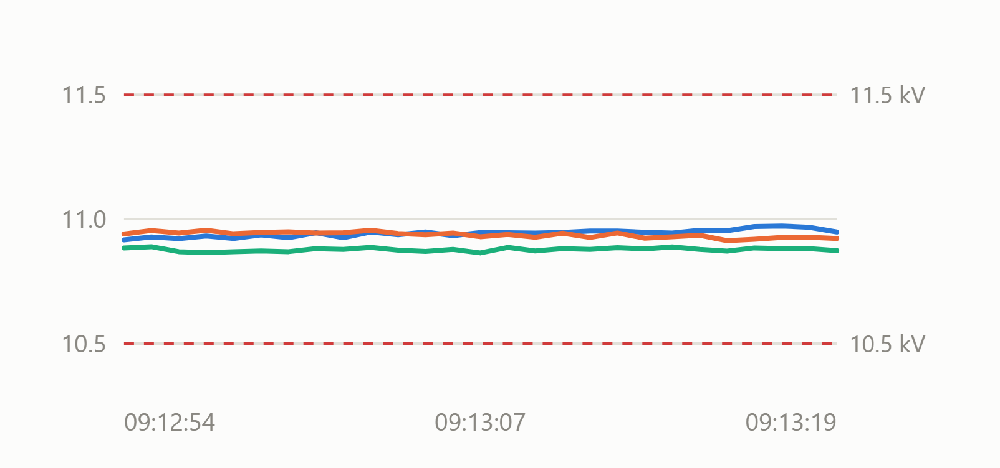
- Purpose
- Show supply quality alongside supply quantity.
- Unit
- kV, two decimal places.
- Interpretation
- Three lines tracking closely together is healthy. Lines separating indicates phase imbalance; the full analysis is on the Voltage & Frequency screen.
5.3.10 Secondary metric tiles
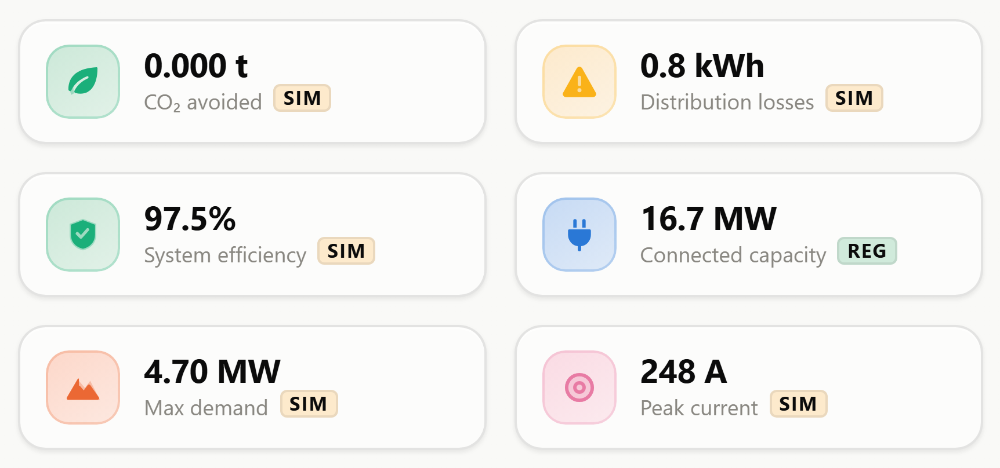
- Contents
- CO₂ avoided (t) · distribution losses (kWh) · system efficiency (%) · connected capacity (MW) · max demand (MW) · peak current (A).
- Purpose
- Carry the figures that matter periodically but do not warrant permanent headline status.
5.3.11 Register data gaps
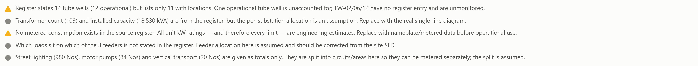
- Purpose
- Make the limits of the underlying data visible at the point of use.
- Contents
- The tube-well count discrepancy; the assumed per-substation transformer allocation; the absence of any metered consumption; the unstated feeder allocation; and the assumed circuit splits for lighting, pumps and vertical transport.IMPL
- Significance
- An unusual inclusion. Its effect is that a reader cannot mistake an assumption for a measurement without having been told.
5.4 How it works
All Overview content is rendered by src/overview.js, called once per second from
the render loop while this screen is displayed. Values are read from the store, the electrical
model and the alarm engine; the screen performs no data acquisition of its own. DOM writes are
made only where a value has changed, so scroll position and keyboard focus survive updates.IMPL
5.5 How to interpret it
- Check the four status indicators in the KPI strip. Green across means supply quality is acceptable.
- Check the alarm panel. Empty means no location is over limit.
- Glance at the load trend — is the solid line near the dashed one?
- Glance at the single-line diagram — are all three substation boxes outlined neutrally?
If all four checks pass, no further inspection is warranted.
5.6 Practical use case
An operator on shift notices the alarm panel now shows one amber entry: ADM-TWR-C6C7 — consumption 267 kW exceeds the 246 kW warning limit by 9%. Glancing at the single-line diagram, the NHQ substation box is outlined amber, confirming the affected load sits on that substation. The KPI strip still shows frequency and voltage normal, so this is a load problem rather than a supply problem. The operator acknowledges the alarm and moves to Load Monitoring to examine the tower's trend.